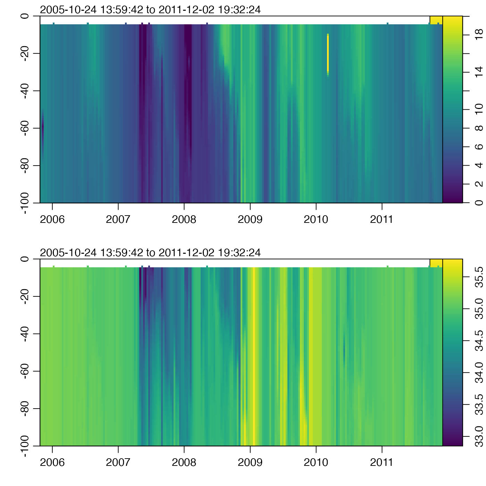

Grid an Argo float, by interpolating to fixed pressure levels.
The gridding is done with approx(). If there is
sufficient user demand, other methods may be added, by analogy to
sectionGrid().
Usage
argoGrid(argo, p, debug = getOption("oceDebug"), ...)Arguments
- argo
A
argoobject to be gridded.- p
Optional indication of the pressure levels to which interpolation should be done. If this is not supplied, the pressure levels will be calculated based on the existing values, using medians. If
p="levitus", then pressures will be set to be those of the Levitus atlas, given bystandardDepths(), trimmed to the maximum pressure inargo. Ifpis a single numerical value, it is taken as the number of subdivisions to use in a call toseq()that has range from 0 to the maximum pressure inargo. Finally, if a vector numerical values is provided, then it is used as is.- debug
A flag that turns on debugging. Higher values provide deeper debugging.
- ...
Optional arguments to
approx(), which is used to do the gridding.
Value
x an argo object.
A note about flags
Data-quality flags contained within the original object are ignored by this
function, and the returned value contains no such flags. This is because such
flags represent an assessment of the original data, not of quantities derived
from those data. This function produces a warning to this effect. The
recommended practice is to use handleFlags() or some other means to
deal with flags before calling the present function.
See also
Other things related to argo data:
[[,argo-method,
[[<-,argo-method,
argo,
argo-class,
argoNames2oceNames(),
as.argo(),
handleFlags,argo-method,
plot,argo-method,
read.argo(),
read.argo.copernicus(),
subset,argo-method,
summary,argo-method
Examples
library(oce)
data(argo)
g <- argoGrid(argo, p = seq(0, 100, 1))
par(mfrow = c(2, 1))
t <- g[["time"]]
z <- -g[["pressure"]][, 1]
# Set zlim because of spurious temperatures.
imagep(t, z, t(g[["temperature"]]), ylim = c(-100, 0), zlim = c(0, 20))
imagep(t, z, t(g[["salinity"]]), ylim = c(-100, 0))
